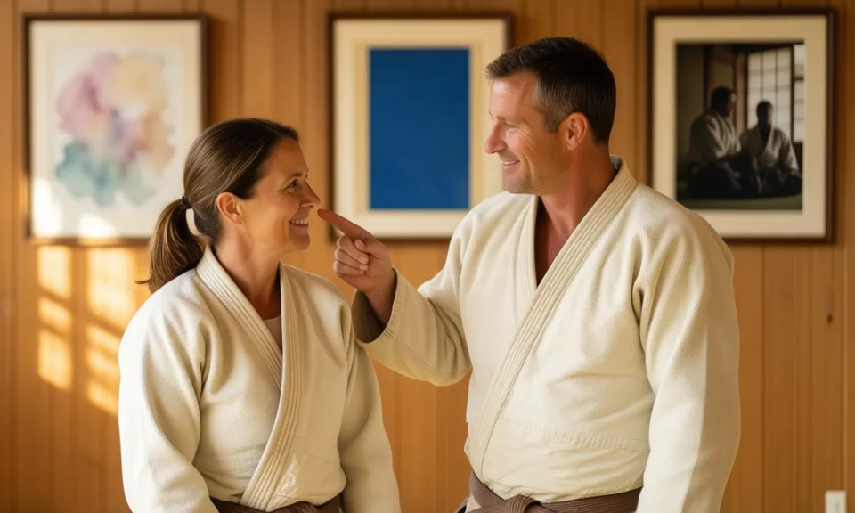
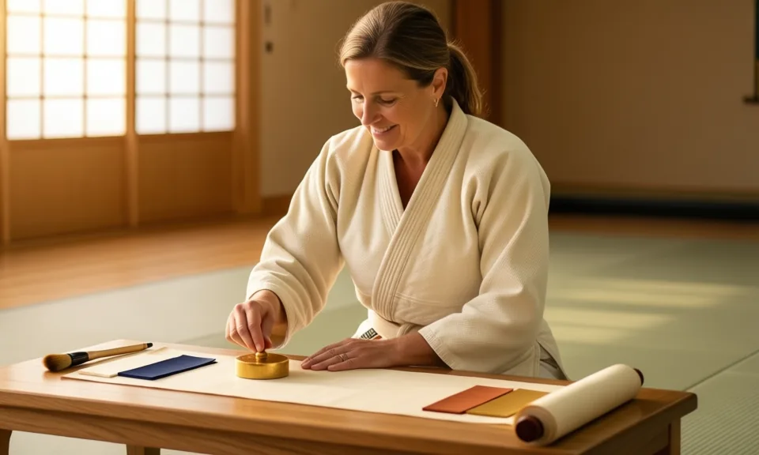
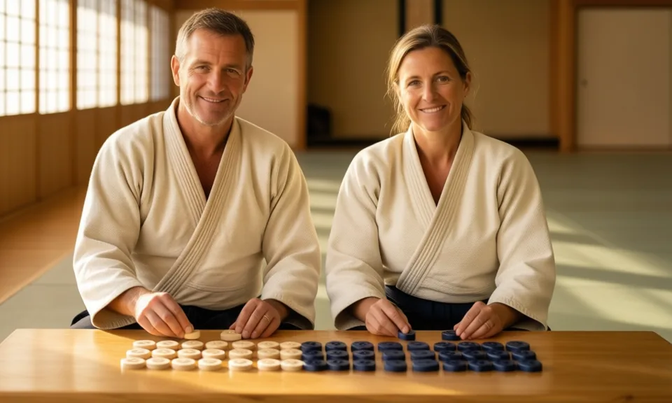
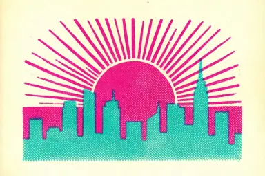

Partir d'un brief
Un brief structuré recueille le message, le public, les usages, la palette, les polices et ce qu'il faut éviter. Le skill peut aussi lire un dossier de projet existant pour proposer un point de départ.
Local Designer donne un directeur artistique à vos agents. Il transforme un brief en planche d'ambiance, attend votre validation, puis produit les images en local dans l'identité choisie.
Skill en version 5.3.0 · Rendus sur votre machine avec Draw Things · Charte, planches d'ambiance et kit d'interface vivent dans un seul dossier que vous versionnez avec votre projet
Sans direction, chaque image générée a un style différent. Local Designer place une étape de validation avant le premier rendu et conserve la décision : tout le projet parle d'une seule voix visuelle.
Un brief structuré recueille le message, le public, les usages, la palette, les polices et ce qu'il faut éviter. Le skill peut aussi lire un dossier de projet existant pour proposer un point de départ.
La génération refuse de s'exécuter tant qu'une direction n'est pas validée sur la planche d'ambiance ou que la charte n'est pas active. La décision et le nom du validateur sont consignés.
L'analyste d'images vérifie chaque résultat (défauts, texte, ressemblance) avant que vous le voyiez. Il utilise un modèle de vision local si vous en configurez un, sinon votre modèle courant.
Quatre briques, utilisables séparément, toutes rangées dans un dossier de design de votre projet.

Planche d'ambianceTrois directions sont montrées sur les mêmes scènes, chacune avec sa palette et ses rôles, sa typographie, ses textures, ce qu'elle dit et ce qu'elle exclut. Une page autonome, claire et sombre, prête à envoyer au client. Commande : /aikido-design-moodboard.

Charte graphiquePalette avec rôles, typographie, style de rendu validé, termes interdits et journal de décisions daté, dans un fichier texte que l'on peut versionner. Un audit mesure l'écart de couleur d'une image par rapport à la palette. Commandes : /aikido-init-design, /aikido-design-audit.

Kit d'interfaceCinq personnalités comparées sur une page avec vos couleurs. Une fois votre choix fait, le skill construit des jetons clairs et sombres contrôlés en contraste (4,5:1 pour le texte), des composants, des icônes, des images de boutons et des fonds de zone. Aucun moteur d'image nécessaire. Commande : /aikido-design-uikit.
Commencez par des ébauches rapides, comparez des styles sur une planche contact conservée hors de git, puis produisez l'image finale derrière le verrou. La graine et le prompt sont sauvegardés pour reproduire n'importe quelle image. Commandes : /aikido-design-render, /aikido-design-style.
Photographique, vectoriel, dessiné, peint, technique ou éditorial. Choisissez-en un, laissez le skill en recommander un depuis votre brief, mélangez-en deux pour créer un nouveau style, ou tirez un style d'une image de référence.

Outils de style : recommend, analyze, match, styles compose et styles draft. Ces vignettes sont celles du skill, produites avec Draw Things.
agent-aikido-art-director
Un illustrateur senior : il pose les bonnes questions, propose des directions, construit la planche d'ambiance, attend la réponse du client, puis dessine et règle.
agent-aikido-image-analyst
Il lit chaque image : défauts, texte, pose, ressemblance à une référence. Il utilise le modèle de vision local facultatif du projet, sinon le modèle courant, sans bruit. Un lecteur peut encore manquer des défauts : « ok » signifie que rien n'a été trouvé.
À saisir dans votre assistant une fois le skill installé.
| Commande | Ce qu'elle fait |
|---|---|
/aikido-init-design | Créer la charte graphique du projet : palette, typographie, style de rendu. |
/aikido-design-brief | Rédiger et valider le brief client structuré. |
/aikido-design-moodboard | Construire la planche d'ambiance du client et consigner sa décision. |
/aikido-design-style | Choisir, comparer, composer et créer des styles de rendu. |
/aikido-design-uikit | Créer et maintenir le kit d'interface : jetons, composants, icônes, images de boutons et de zones. |
/aikido-design-render | Générer des images : ébauche, balayages de réglage, rendu final derrière le verrou de validation. |
/aikido-design-charter | Lire, contrôler, mettre à jour et annoter la charte ; générer sous son identité. |
/aikido-design-audit | Comparer des images ou un dossier à la palette de la charte et signaler l'écart. |
Les images sont produites par un connecteur, le moteur installé sur votre Mac. Deux connecteurs sont disponibles, tous deux pour l'application Draw Things.
Utilisez l'API HTTP de l'application, ou gRPC, qui liste les vrais modèles du serveur et peut joindre un serveur local, distant ou de délestage que vous gérez.
Le mode local est le chemin vérifié. Envoyer quoi que ce soit hors de votre machine exige votre accord.
Les modèles d'image ignorent parfois les consignes : texte, mains et visages demandent un contrôle. Une seule image est produite à la fois, et ComfyUI est prévu, pas écrit.
Le brief, la planche d'ambiance (sans essais rendus), la navigation dans les styles, le kit d'interface et l'analyse d'images n'ont pas besoin de moteur d'image.
Le skill s'installe avec le gestionnaire de skills AI-KIDO. Prérequis : Node.js 18 ou plus, cwebp pour l'export WebP, ImageMagick ou sips pour l'analyse d'images, et pour générer, macOS avec Draw Things.
Dans Draw Things, ouvrez les réglages avancés et activez API Server : gRPC sur le port 7859 (recommandé) ou HTTP sur le port 7860. Laissez l'application ouverte.
Lancez status pour voir le modèle et les réglages utilisés, et si la cible est locale ou distante.
Rédigez le brief, validez une direction sur la planche d'ambiance, puis demandez votre première image.
/skill-manage get --skill local-designer
node prompts/hard_points/system/local-designer/scripts/local-designer.mjs statusLe skill est récupéré dans le catalogue de skills configuré pour votre projet (skills.cfg).
Installez le skill, rédigez un court brief et comparez trois directions avant le moindre rendu final.